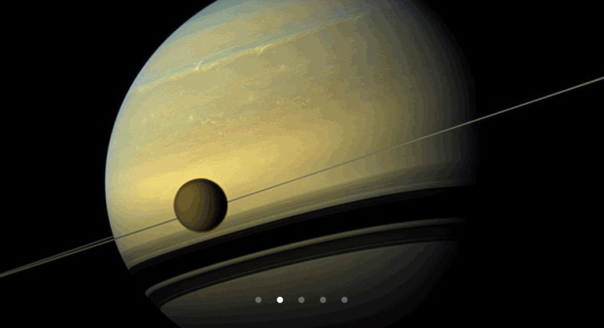
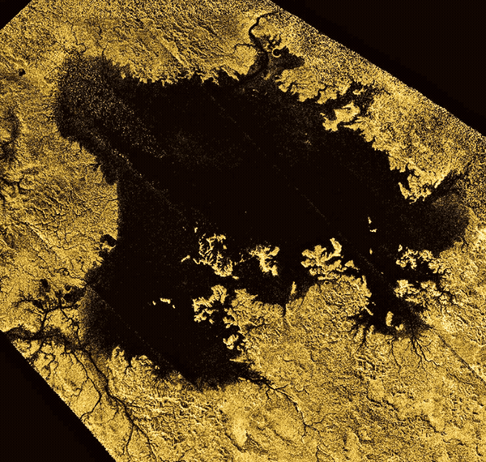
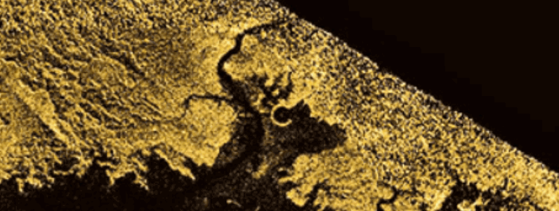
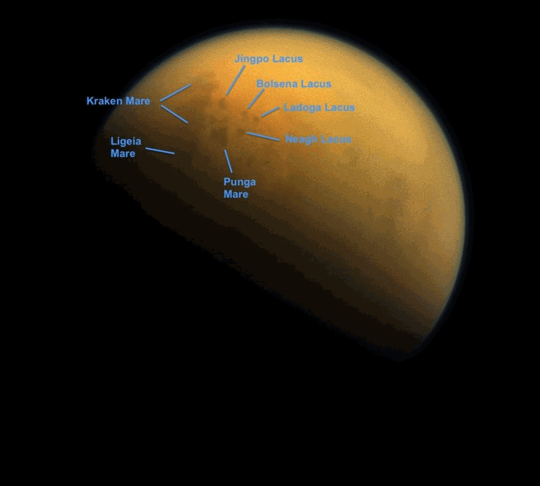
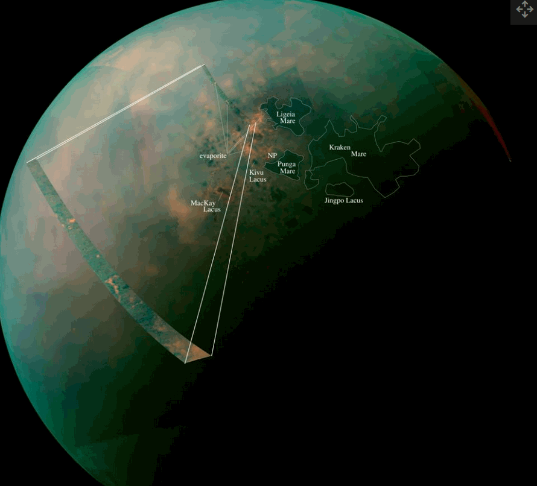
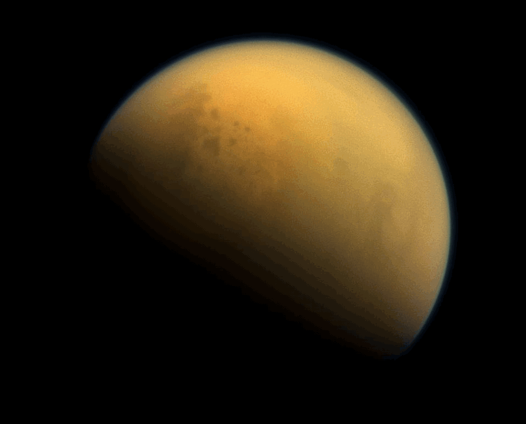
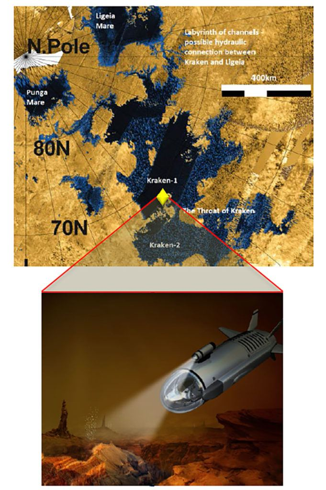
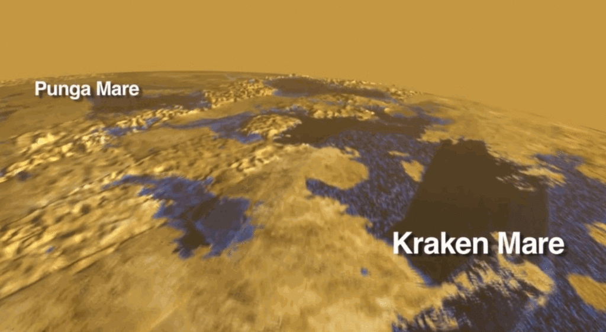

There are many proposals to explore Titan. Some of the most original ideas includes a spaceship that uses the atmosphere itself as fuel to fly about the planet. Others includes balloons and rovers, and other cool ideas. This idea is really noteworthy. It involves the use of a submarine to explore the seas of Titan.
But first…
What is Titan?
Titan is a moon of the outer gas giant Saturn. People know Saturn as the “planet with the rings”. It’s a pretty big moon. And it has an atmosphere, with continents and oceans.
Saturn’s largest moon Titan is an extraordinary and exceptional world. Among our solar system’s more than 150 known moons, Titan is the only one with a substantial atmosphere. And of all the places in the solar system, Titan is the only place besides Earth known to have liquids in the form of rivers, lakes and seas on its surface.
Titan is larger than the planet Mercury and is the second largest moon in our solar system. It is larger than our moon around the earth.
Jupiter’s moon Ganymede is just a little bit larger (by about 2 percent).
Titan’s atmosphere is made mostly of nitrogen, like Earth’s, but with a surface pressure 50 percent higher than Earth’s. Titan is the only moon in the solar system known to have a substantial atmosphere, which is mostly nitrogen like Earth’s.
Titan has clouds, rain, rivers, lakes and seas of liquid hydrocarbons like methane and ethane. The largest seas are hundreds of feet deep and hundreds of miles wide. Beneath Titan’s thick crust of water ice is more liquid—an ocean primarily of water rather than methane.

Titan’s subsurface water could be a place to harbor life as we know it, while its surface lakes and seas of liquid hydrocarbons could conceivably harbor life that uses different chemistry than we’re used to—that is, life as we don’t yet know it. But then again, Titan could just as well be a lifeless world.
Titan’s air is dense enough that you could walk around without a spacesuit. But you’d need an oxygen mask and protection from the bitter cold.
Map
Titan has both continents, large land masses, oceans, and seas. While the atmosphere is different than that of the earth, and it is much colder, it is in many ways quite similar. It is an exciting place to visit and explore.
Here’s a map of one of the inland seas…

Indeed, there are so many interesting things in the topographical image above. You can see deep seas, rivers that feed into the seas, mountains, hills, and islands. It would be a great place to go to, and explore.
Maybe go to one of the isthmus’s and stand on the edge and look out and over the immense sea. It would be interesting. As Saturn is so close, the gravitational forces must be interesting and create some curious tidal movements. You would be able to watch them (with a time elapse camera) and it would be curious.

A cool proposal to discover the undersea world of Titan by robotic submarine.
The following is a reprint of an article titled “Submarine could explore seas of huge Saturn moon Titan” written by Mike Wall on Space.com. Reprinted with minor changes, and edited to fit this venue. All credit to the author.
The sub could be ready to launch in the 2030s, researchers said.
A submarine could explore alien seas just a few decades from now.
Researchers have been crafting a concept mission that would send a submarine to Saturn’s huge moon Titan, which sports lakes and seas of liquid hydrocarbons on its frigid surface.
Such a mission, if approved and funded by NASA, could be ready to launch in the 2030s, potentially paving the way for even more ambitious submarine exploration down the road, the concept’s developers said.
“We feel that the Titan submarine is kind of a first step before you go do a Europa or Enceladus” sub mission, Steven Oleson, of NASA’s Glenn Research Center in Ohio, said last month during a presentation with the agency’s Future In-Space Operations working group.
Europa and Enceladus — moons of Jupiter and Saturn, respectively — both harbor huge oceans of liquid water. But these two water bodies are buried under ice shells and would therefore be tougher to drop a sub into than Titan’s surface seas.
A weird and potentially habitable world
At 3,200 miles (5,150 kilometers) wide, Titan is the second-largest moon in the solar system. The only one bigger is Jupiter’s Ganymede, which has Titan beat by just 75 miles (120 km).
But size isn’t all that makes Titan special. For example, the giant moon is the only world beyond Earth known to host stable bodies of liquid on its surface — those seas and lakes of liquid methane and ethane, some of which are bigger than North America’s Great Lakes.

In addition, Titan’s thick atmosphere likely hosts complex chemistry involving organic molecules, the carbon-containing building blocks of life as we know it. As a result, many astrobiologists view Titan as a promising potential abode for life, suggesting that native organisms could be swirling in the moon’s air or swimming in its lakes and seas.
Those swimmers would be very different from anything that exists here on Earth, given that they’d be making a living in liquid methane or ethane rather than water. Titan’s surface is far too cold for water to remain liquid, but scientists think the moon hosts a salty sea of the stuff deep underground, like Enceladus, Europa and a number of other solar system bodies.
It’s therefore possible that Titan hosts two completely different and separate ecosystems — a surface world of “strange life” that overlies a realm of more familiar (to us, anyway) water-reliant organisms.
Exploring the hydrocarbon seas?
Most of what we know about Titan we’ve learned from the $3.2 billion Cassini-Huygens mission, which studied Saturn and its many moons up close from 2004 through 2017. The bulk of this work was done by NASA’s Cassini Saturn orbiter, but significant contributions also came from the Huygens lander, a European Space Agency-Italian Space Agency probe that touched down on Titan in January 2005.

NASA is working on a Titan spacecraft of its own — an eight-rotor drone called Dragonfly, which is scheduled to launch in 2026. If all goes according to plan, Dragonfly will land on Titan in 2034, then study the moon’s complex chemistry and potential habitability at a number of different locations.
A submarine could be the next step in Titan exploration. The agency has not selected the Titan sub idea as an official mission, but Oleson and his team did get two rounds of funding from the NASA Innovative Advanced Concepts (NIAC) program, which seeks to spur the development of potentially game-changing exploration ideas and technologies. Those two NIAC grants, worth $100,000 and $500,000, were awarded in 2014 and 2015, respectively.
The main goal of the NIAC work was to draw up a basic engineering blueprint of a potential Titan sub, Oleson said.
“Is it possible?” he said during the FISO presentation. “What kinds of technologies are needed? What’s unique about that environment?”
The uniqueness is multilayered. For instance, though Titan is huge for a moon, it’s much smaller than Earth, sporting just 14% of our planet’s gravitational pull. That means a Titan sub wouldn’t experience nearly as much pressure on its hull as a sub would at the same depth on Earth.
And the Titan sub would be cruising through a different medium than the ones here on Earth do. But that’s not necessarily a negative, either. A submarine could push through liquid hydrocarbons fairly easily, Oleson said, and the stuff is transparent to radio signals, enabling communication with the craft even while it’s submerged.
Those communications could reach the sub directly from Earth or be relayed via a Titan orbiter, depending on the mission architecture.
A standalone Titan submarine would need to be big — about 20 feet (6 meters) long, with a weight (on Earth) of 3,300 lbs. (1,500 kilograms) — to accommodate the requisite communications equipment, Oleson said. A sub with an orbiter companion, by contrast, could fit the same science instrumentation into a body just 6.5 feet (2 m) long, with a weight of about 1,100 lbs. (500 kg).
That science gear should include, at the bare minimum, a chemistry package that analyzes liquid samples, a surface imager, a depth sounder, a weather station and an instrument that measures the physical properties of the surrounding sea, Oleson and his team determined. Additional instruments could analyze seafloor samples and image the ocean bottom, among other tasks.

The researchers also investigated the possibility of staying on the surface with a boat, which would probe the Titanic depths intermittently with small, instrument-laden devices called dropsondes. This would be a less risky option, but the reward would be lower as well, Oleson said.
“We’re losing out on science, just from the fact that we can’t submerge and do a lot of these tests,” he said of the boat idea.
A standalone submarine or a sub-orbiter duo would likely be flagship missions, Oleson said. Flagships are NASA’s most expensive and ambitious missions, with price tags generally in excess of $2 billion these days. Examples include Cassini-Huygens, the Mars rover Curiosity and the Mars 2020 rover Perseverance, which launched toward the Red Planet in late July.
NASA might be able to pull off a Titan boat mission via its New Frontiers program, Oleson said. New Frontiers missions, such as Dragonfly and the New Horizons Pluto probe, cost significantly less than flagships. Proposals for the latest round of New Frontiers funding, which resulted in Dragonfly’s June 2019 selection, had to abide by a cost cap of $850 million (not including launch or mission-operations costs).
All versions of a Titan sea explorer would be nuclear-powered, just like Cassini and Dragonfly. Saturn lies 10 times farther from the sun than Earth does, so sunlight is spread pretty thin on Titan. (And a solar-powered submarine would probably be a bad idea even here on Earth, given that such vehicles make a living plying dark depths.)
Launch in the 2030s?
Titan’s high northern latitudes host almost all of the moon’s lakes and seas, including the two most intriguing submarine-exploration targets, Kraken Mare and Ligeia Mare.

Both of these bodies are enormous. Kraken Mare covers about 154,000 square miles (400,000 square km) and is at least 115 feet (35 m) deep. Ligeia Mare has an area of 50,000 square miles (130,000 square km) and a maximum depth of 560 feet (170 m).
Like Saturn, Titan has seasons that last around seven Earth years apiece. It would be best to explore Kraken or Ligeia during Titan’s northern summer, when a spacecraft could image shorelines in visible light and communicate directly with mission controllers on Earth, Oleson said.
A 2045 arrival at Titan would therefore be a good choice, he said. If the mission included an orbiter for communications, arriving during the northern springtime, around 2040, is also an option, Oleson added.

The journey to Saturn takes about seven years, so a Titan sub mission of any type would need to launch in the 2030s (unless we want to wait another three decades for the seasons to shift again).
That timeline “would be fine with us — to be able to get this ready in the next decade to push there,” Oleson said.
Conclusion
If you all are still around by 2045, you might be able to view the undersea world of Titan via electronic media. I’ll almost be in my 90’s by then. Hopefully still kicking, and hopefully not in an old-folks home.
Still, it’s an exciting concept. I’ve always enjoyed adventure and this is the best of what we can do now with what is publicly available to us now.
There’s a lot of interesting things about Titan. Many things that are worthy of discussion, but I really cannot get too deep into those subjects. My lips are sealed. But, no worries, you can well imagine standing on one of those large isthmus’s and look out and watch the slow sluggish movement of the nearly calm seas.
Wouldn’t it be grand?